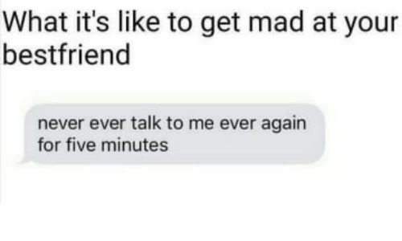
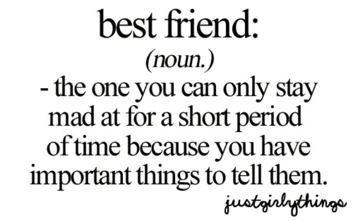

When I was 8, I immigrated to Canada from India knowing limited English, not understanding social norms, and not having the same lunches that the cool kids at school would every day 😁
Suffice it to say, I did NOT have an easy time making friends when I immigrated (although at least I still loved Indian food 😉). I remember my teachers pairing me up with 'school buddies' that would show me the way and were my first friends.
Over the years though, I've met a lot of good people that helped my family and I through our immigrant experiences… including some pretty good friends.
That said, it's only recently that I've found my BEST friends (recently meaning years later 😕). And having a best friend is so amazing, I wanted to just take a second to reflect on what makes a good friend vs. a best friend!
The biggest factor for introverts like me is vulnerability. Usually, I'd keep most issues to myself and wouldn't really talk about problems with most people I was friendly towards. But the BEST friends got to hear ALL the random rants about how my world domination plan didn't go right on that particular day 😉
And the thing is, you don't feel uncomfortable talking about those kinds of details with your BEST friend. It's like they're a second brain to process information along with you! I can easily visualise all the times where my BEST friends and I would just walk around schoolyards as kids and talk and talk and talk and never get bored of sharing all the good AND bad experiences together!
This is the key factor in differentiating BEST friends from good friends. Good friends are there to have fun with and make happy memories.
But BEST friends are the ones who keep sticking around after the happy stuff and make it okay to be sad.
And on the note of being comfortable around BEST friends, BEST friends also don't come with social norms to follow. If your BEST friend annoys you and you decide to get your revenge with a tickle war (at the age of 17…), that's perfectly fine 😜 You do get a few weird stares (especially if you undertake this revenge in the middle of a crowded city street), but it doesn't matter as much when you're having fun with your BEST friend!
And speaking of your BEST friend annoying you - the following are THE most accurate representations of how any argument with a BEST friend goes:
 That said, even if things aren't going well for a little bit, you don't have to worry with a BEST friend. BEST friends have a habit of sticking around through the largest of challenges. For example, I had this BEST friend for 2–3 years when I was younger and then my family moved across the country. Even after I hadn't seen him after several years, he was visiting one day and we just picked up being friends like normal and went to the aquarium to look at fish. Because we both still knew that I like fish 😁
Still, BEST friends aren't always nice to have around. In fact, BEST friends have a habit of telling you harsh things that other people won't in a confoundingly non-apologetic way. 😖 It's sometimes annoying to consider how they'll be nice to everyone else, but tell you what they REALLY think about your stupid decisions, but that just goes to show how much you trust each other!
And finally, BEST friends start good work, whereas good work starts friends (usually regular ones). Ie. You and your bestie were a #team long before you knew what you were teaming up on 😀 Interesting escapades have a habit of coming over and over again with your BEST friend.
So thank you to all the BEST friends out there. You genuinely make someone else's life so different, they couldn't imagine it without you 💯 And thank you to all of my best friends, who gave me so many stories that I couldn't list any of them in this blog post without each of the points above turning into a book… 😕😅
And as for the people reading this, if you find someone that checks off all the following boxes:
- Makes it okay for you to be vulnerable
- Makes it okay to not always worry about society's rules
- Is the one you can only be mad at for 5 minutes
- Sticks with you throughout all the challenges
- Is honest with you even with harsh details
- Is your go-to partner for whatever you're starting
AND still has way too many amazing parts of them to describe in a simple list… hold that person close and treasure their friendship, because you only find someone like that once in a long long time :-)
- Madhav Malhotra
Thursday, 06-Aug-2020 01:42:05 GMT+0000